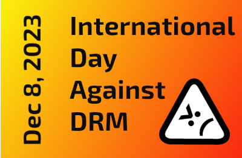

The Free Software Foundation (FSF) is a nonprofit with a worldwide mission to promote computer user freedom.
FEATURED
Worldwide community of activists protest OverDrive and others forcing DRM upon libraries
FEATURED
Free software, free society, free education!
Free software means that the users have the freedom to run, edit, contribute to, and share the software. Thus, free software is a matter of liberty, not price. We have been defending the rights of all software users for the past 35 years. Help sustain us for many more; become an associate member today.
Updates
-
US Federal employees and retirees: Contribute conveniently through the Combined Federal Campaign
BOSTON, Massachusetts, USA -- Monday, December 4, 2023 -- The Free Software Foundation, today, highlighted its participation as a charity in the 2023 Combined Federal Campaign, which is focused on human rights this week.
-
Free Software Directory meeting on IRC: Friday, December 08, starting at 12:00 EST (17:00 UTC)
Join the FSF and friends on Friday, December 08, from 12:00 to 15:00 EST (17:00 to 20:00 UTC) to help improve the Free Software Directory.
-
EmacsConf joins Free Software Foundation fiscal sponsorship program
BOSTON, Massachusetts, USA -- Thursday, November 30, 2023 -- The Free Software Foundation (FSF) announced today that EmacsConf will join the Working Together for Free Software Fund. The one and only conference dedicated to the joy of Emacs is joining just before their event on December 2 and 3, 2023.
-
Worldwide community of activists protest OverDrive and others forcing DRM upon libraries
BOSTON, Massachusetts, USA -- Tuesday, November 28, 2023 -- The Free Software Foundation (FSF) has announced its Defective by Design campaign's 17th annual International Day Against DRM (IDAD). It will protest uses of Digital Restrictions Management technology's hold over public libraries around the world, exemplified by corporations like OverDrive and Follett Destiny. IDAD will take place digitally and worldwide on December 8, 2023.
-
Free Software Directory meeting on IRC: Friday, December 01, starting at 12:00 EST (17:00 UTC)
Join the FSF and friends on Friday, December 01, from 12:00 to 15:00 EST (17:00 to 20:00 UTC) to help improve the Free Software Directory.
-
FSF Free Software Community Meetup on December 15, 2023
We are inviting you to the first ever FSF Free Software Community Meetup on Friday, December 15, 2023, from 18:45 to 21:00 (6:45 PM to 9:00 PM) EST.